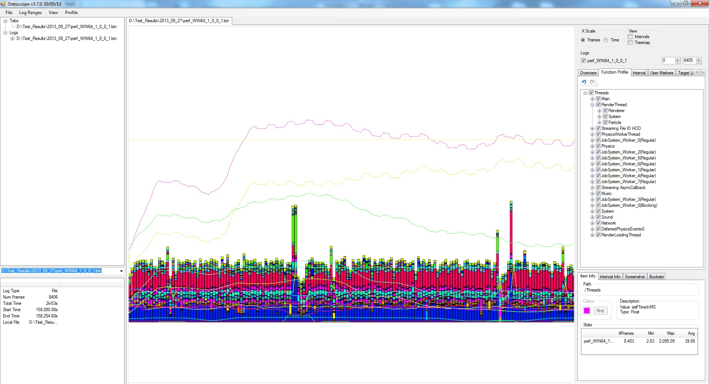

Обзор
Статоскоп — это инструмент для просмотра и анализа данных, зарегистрированных по каждому кадру, и, в более общем смысле, это система, которая производит эти данные и управляет ими.
По сути, он обеспечивает способ записи значений (например, кадров в секунду, количества вызовов отрисовки и т. д.) из CRYENGINE и способ показать, как значения изменяются в ходе прохождения или в течение нескольких прохождений.
Главы:
Средство просмотра (показано ниже) предназначено для представления записанных данных в полезные способы, например, визуально на графике, который поддерживает фильтрацию и масштабирование, базовую обработку (усреднение, локальный максимум), статистику (мин/макс/среднее, сегменты), сравнение с другими журналами или с целевыми линиями и отображение внутриигровых снимков экрана и пользовательских маркеров для справки по игровому процессу.
